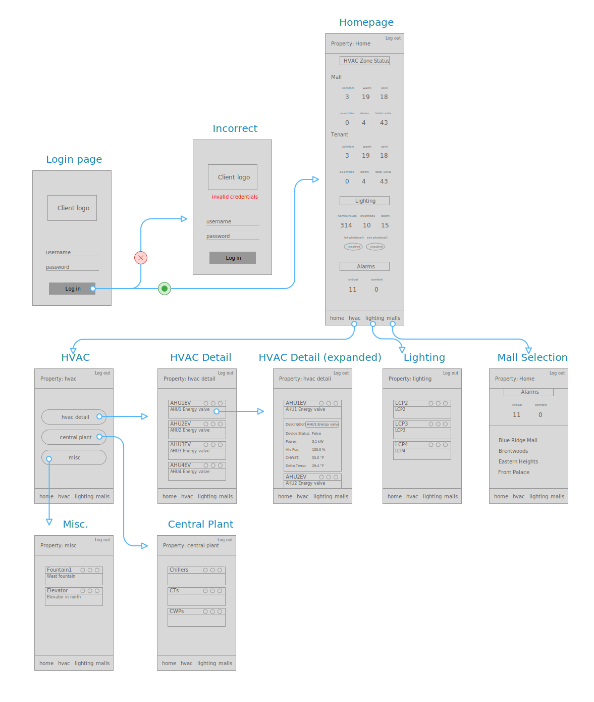
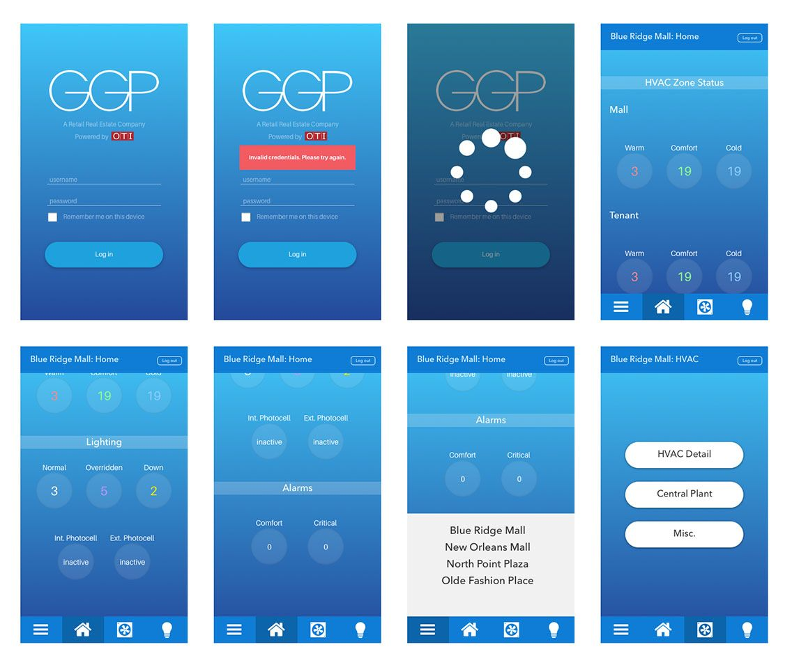
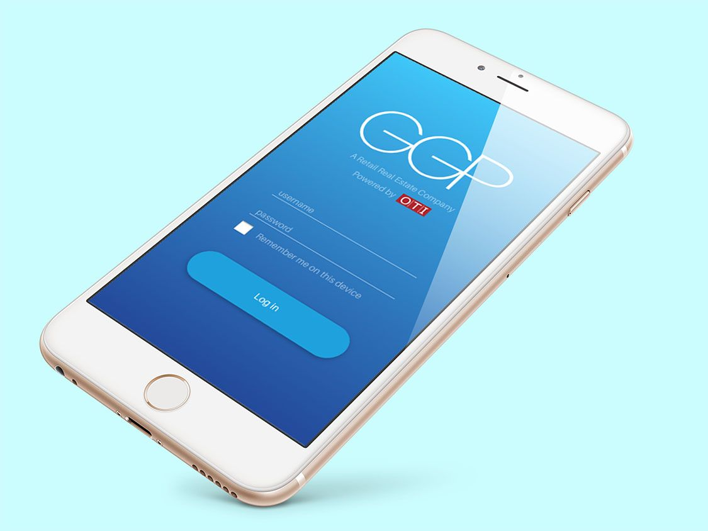
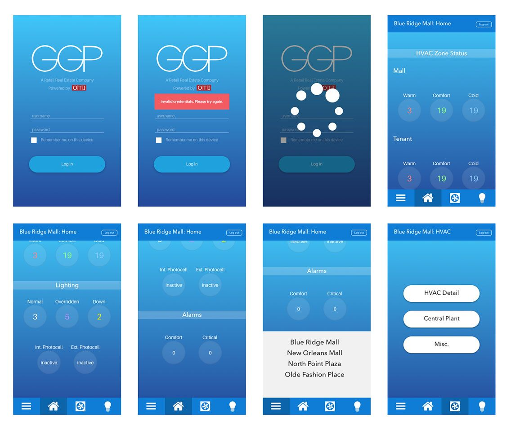
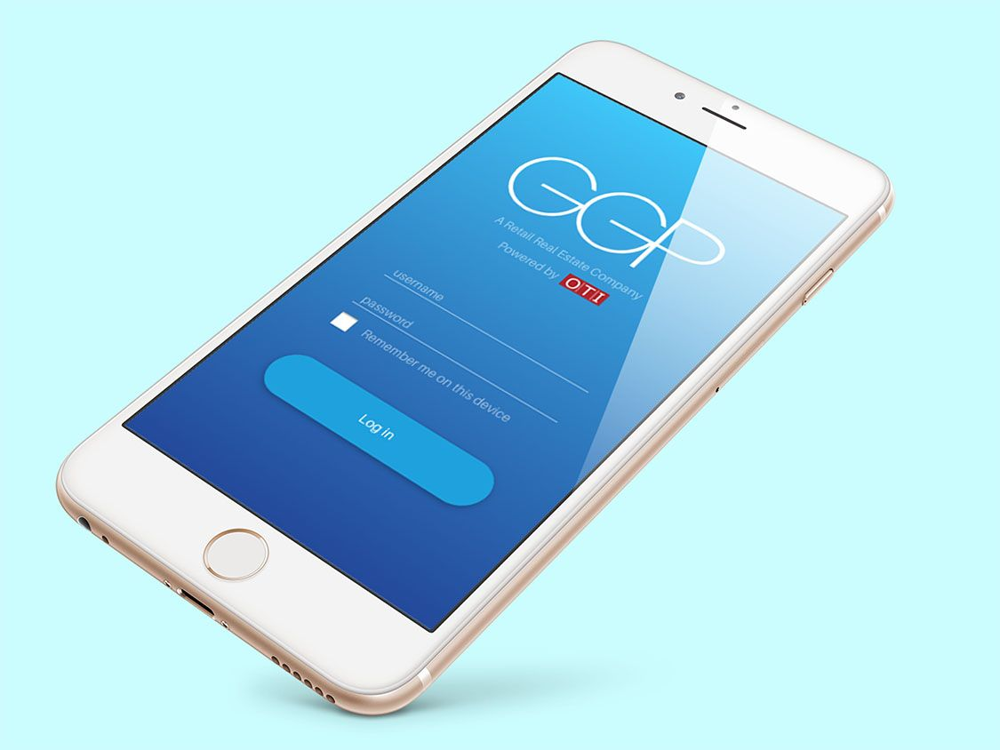

GGP Mobile App

At Controlco, we integrated the building automation controls of over sixty properties for GGP. We provided a web and mobile UI for their operations teams to control facility settings like HVAC, lighting, alarms, and sometimes central plant systems. The current mobile UI is not native, but is instead a stripped down version of the website app. I had the opportunity to come up with a new robust UI to replace our mobile version per request of our Operations VP.
There were many apparent problems with the current interface. Since it was built with the same look and feel as our web browser version, there were interactions that were clunky when translated into mobile. It was poor usability due to layers upon layers of nested data. The process of navigating the app wasn't fluid at all. The opportunity came as an exploration project in partnership with the VP who acted as the project manager.
I had a few inquiry sessions with our users to identify their main use of the platform. Users provided me with their feelings about certain features as well as their need to see certain facility data. Using that information, I created wireframes depicting the potential layout.
The mobile UI would not allow users to change any live settings, therefore I only made the necessary data visible. The interface would serve as an accessory to help remote workers monitor their control settings. Users are only able to view data for systems of properties they are given permission to.
We opted for Avenir to be consistent with our other templates. The type has been positively received with our users due to the readability and scalability. Color is oftentimes subjective, but we were able to come to a general agreement that shades of blue would make the app look much more modern compared to our old colors.
 



After the prototype was launched, I received a lot of positive feedback for the design. This new project went into the development queue since there were other projects that were more urgent. Working in the IoT big data space can be difficult already with the shear amount of data and content. Trying to fit this data on a smaller device is even more challenging, but it definitely helped us create more accessible interfaces for subsequent products.